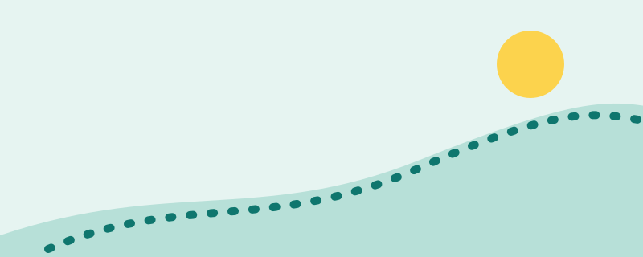

How to Start Walking Safely With Severe Obesity

Walking is one of the simplest ways to become more active. It needs no equipment, can be done at any pace, and is usually gentler on the body than running. If severe obesity makes movement uncomfortable, the goal at the start is not speed or distance. It is to build a habit that feels safe and repeatable.
Talk to your doctor first if...
- you have heart or lung disease, diabetes, high blood pressure, or have not been active for a long time;
- you have joint, back or foot pain, or problems with balance;
- you take medicines that may affect your heart rate or blood sugar.
Your doctor can tell you what is safe for you and whether to start with supervised sessions.
Stop and get urgent help if you notice
Chest pain or pressure, severe shortness of breath, fainting or severe dizziness, or sudden pain in a joint. Do not push through these.
Week 1: start very small
- Walk for 5 to 10 minutes at a comfortable pace, once or twice a day. Breaking activity into short sessions is fine.
- Use the talk test: you should be able to talk, but not sing. If you cannot speak a full sentence, slow down.
- Choose flat, even ground, or a treadmill, a mall, or a quiet street if the weather is difficult.
- Rest whenever you need to. Stopping to rest is part of the plan, not a failure.
How to progress
Once a session feels easy for a week or two, add a few minutes. Change only one thing at a time, either how long, how often, or how fast. The World Health Organization recommends that adults aim for 150 to 300 minutes of moderate-intensity activity a week, and stresses that some activity is better than none. Reaching that amount gradually, over weeks or months, is normal and sensible.
Protect your joints and skin
- Wear supportive, well-fitting shoes with cushioning and enough room for your toes.
- Wear breathable clothing and moisture-wicking socks to reduce chafing. Anti-chafe products can help.
- Drink water, and avoid walking in extreme heat.
- If walking is painful, ask your doctor about lower-impact options such as water exercise, a stationary bike, or chair-based exercises.
Make it stick
- Link walking to something you already do, such as after a meal or after a phone call.
- Walk with a friend or family member, or share your progress with our community.
- Track minutes, not weight. Better sleep, mood, energy and blood pressure can improve before the scale moves.
A realistic expectation
Physical activity brings real health benefits even when weight changes slowly. On its own, it usually leads to modest weight loss, and it works best alongside medical care and healthy eating guided by a professional.
Sources to read
- World Health Organization: Guidelines on physical activity and sedentary behaviour (2020).
- U.S. Centers for Disease Control and Prevention: Physical Activity Basics for Adults.
- U.S. National Institute of Diabetes and Digestive and Kidney Diseases (NIDDK): Physical activity and weight management.